What makes optimization special?
(and why should I care?)
Data Philly, Feb. 2024
Dante Gates
About me
Husband and Father
Philly data scientist
wrote a haiku once
Outline
- Background (what makes optimization special?)
- 3 fun examples (takeaway)
- 2 industry examples (why should I care?)
- Takeaway
⚠️ Disclaimer
Background
As seen on machine learning
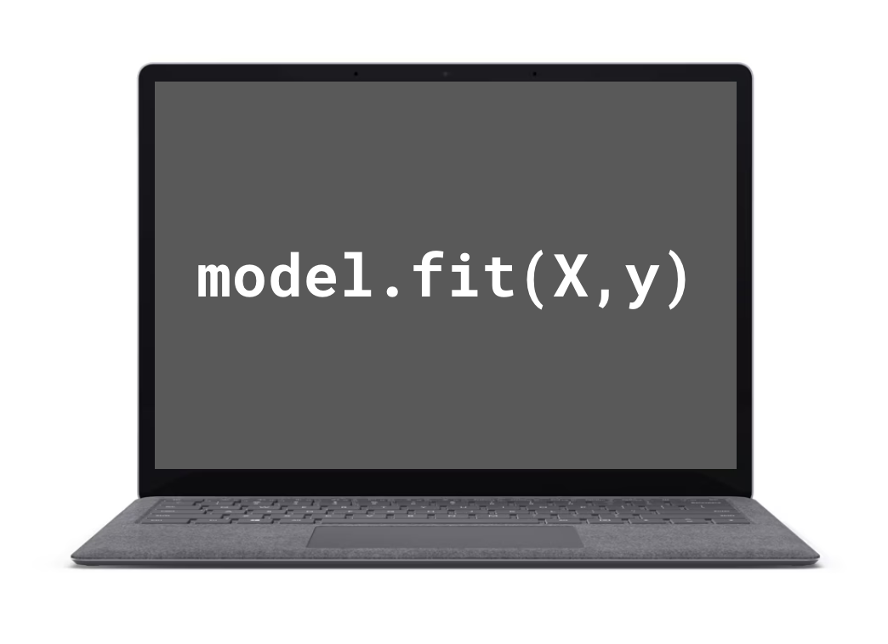As Seen on Machine Learning
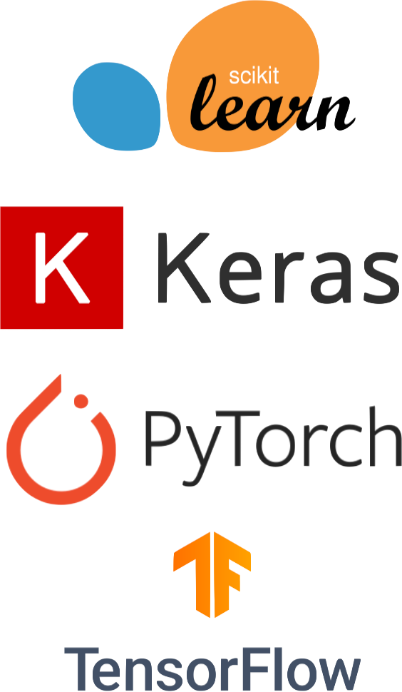
As Seen on Machine Learning
- Stochastic gradient descent
- Mini-max
As seen on machine learning
Objective function
\begin{align*} \underset{\theta}{\text{argmin}}\ \mathcal{L}(y,f(\theta)) \end{align*}
As seen on machine learning
Penalties (constraint, sort of)
\begin{align*} \underset{\theta}{\text{argmin}}\ &\mathcal{L}(y,f(\theta))\color{blue}{+\sum_{i=1}^{l}{g_{i}(\theta, \lambda_{i})}}\\ \text{where}&\\ &\color{blue}{g_{i}(\theta,\lambda_{i})>0,\ i=1\ldots l} \end{align*}
As seen on machine learning
Input/Output domain (constraint)
\begin{align*} \underset{\theta}{\text{argmin}}\ &\mathcal{L}(y,f(\theta))+\sum_{i=1}^{l}{g_{i}(\theta, \lambda_{i})}\\ \text{where}&\\ &g_{i}(\theta,\lambda_{i})>0,\ i=1\ldots l \\ &\color{blue}{f(\theta): \mathbb{R}^{n}\to \mathbb{R}^{m}} \end{align*}
What’s so special about optimization?
Objective no longer explicitly references a target variable
\begin{align*} &\underset{\theta}{\text{argmin}}\ \color{blue}{f({\theta, X})} \\ \end{align*}
What’s so special about optimization?
Ability to require arbitrary (sort of) constraints
\begin{align*} \underset{\theta}{\text{argmin}}\ &f({\theta, X}) \\ \text{s.t.}&\\ &\color{blue}{g_{i}(\theta, X) < C_{i}, i\ldots n} \end{align*}
What’s so special about optimization?
Model parameters no longer bound to strictly reals
\begin{align*} \underset{\theta}{\text{argmin}}\ &f({\theta, X}) \\ \text{s.t.}&\\ &g_{i}(\theta, X) < C_{i}, i\ldots n \\ &\color{blue}{f(\theta, X): \{\mathbb{R},\mathbb{Z},\ldots\}^{n}\to \mathbb{R}\ \text{(Usually)}} \end{align*}
Classic example: traveling salesman
| \underset{x_{i,j}}{\text{argmin}}\ \sum_{i=1}^{n}{\sum_{j=1,i\ne j}^{n}{c_{i,j}x_{i,j}}} | Minimize distance traveled |
| x_{i,j}\in \{0, 1\} | Objective variable represents path assignments |
| \sum_{i=1,i\ne j}^{n}{x_{i,j}}=1 | All cities have exactly one incoming path |
| \sum_{j=1,i\ne j}^{n}{x_{i,j}}=1 | All cities have exactly one outgoing path |
What makes optimization special?
“ML optimization” \begin{align*} \underset{\theta}{\text{argmin}}\ &\mathcal{L}(y,f(\theta))+\sum_{i=1}^{l}{g_{i}(\theta, \lambda_{i})}\\ \text{where}&\\ &g_{i}(\theta,\lambda_{i})>0,\ i=1\ldots l \\ &f(\theta): \mathbb{R}^{n}\to \mathbb{R}^{m} \end{align*}
\begin{align*} \underset{\theta}{\text{argmin}}\ &f({\theta, X}) \\ \text{s.t.}&\\ &g_{i}(\theta, X) < C_{i}, i\ldots n \\ &f(\theta, X): \{\mathbb{R},\mathbb{Z},\ldots\}^{n}\to \mathbb{R} \end{align*}
What makes optimization special?
“ML optimization” \begin{align*} \underset{\theta}{\text{argmin}}\ &\mathcal{L}(y,f(\theta))+\sum_{i=1}^{l}{g_{i}(\theta, \lambda_{i})}\\ \text{where}&\\ &g_{i}(\theta,\lambda_{i})>0,\ i=1\ldots l \\ &f(\theta): \mathbb{R}^{n}\to \mathbb{R}^{m} \end{align*}
\begin{align*} \underset{\theta}{\text{argmin}}\ &f({\theta, X}) \\ \text{s.t.}&\\ &g_{i}(\theta, X) < C_{i}, i\ldots n \\ &f(\theta, X): \{\mathbb{R},\mathbb{Z},\ldots\}^{n}\to \mathbb{R} \end{align*}
Mathematical optimization is not special
Three examples
(or, the truth, a half-truth and nothing but a lie, but not necessarily in that order)

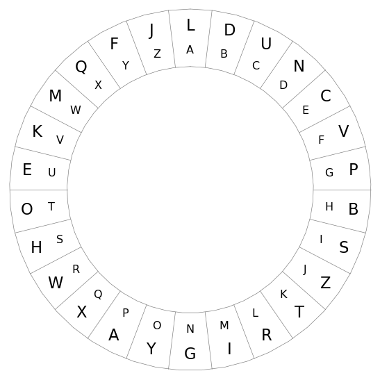
Bro, do you even read?
x: 14 pages contain underlining
t_{x}: Last underline appears on page 84
T: 324 pages total
What was the final page read?
Conceptually
x: 14 pages contain underlining
t_{x}: Last underline appears on page 84
T: 324 pages total
Is this an optimization problem?
❓ Objective: ??
✅ Decision variable: Rate of underlining (\lambda), final page read (\tau)
✅ Constraints: Parameters are positive
Is this an optimization problem?
✅ Objective: Maximize likelihood of observed data (number of underlines and final page with an underline)
✅ Decision variable: Rate of underlining (\lambda), final page read (\tau)
✅ Constraints: Parameters are positive
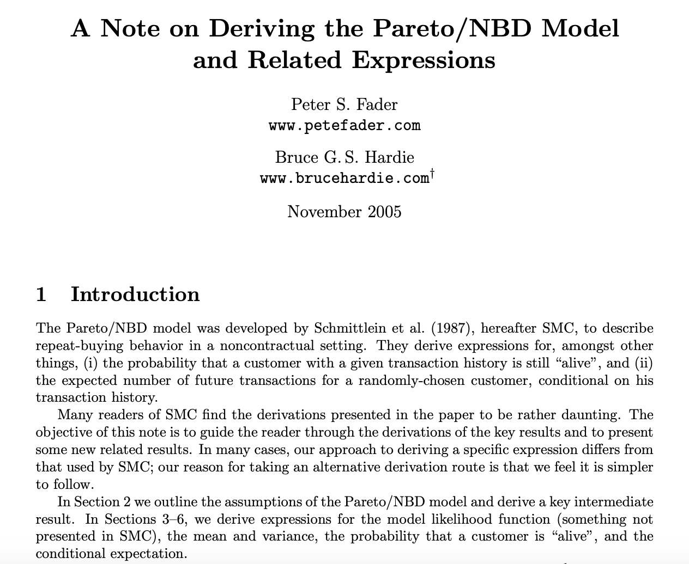
\begin{equation}\tag{7} \text{LL}(r,\alpha,a,b)=\sum_{i=1}^{n}{\ln \left[\text{L}(r,\alpha,a,b\vert X_{i}=x_{i},t_{x},T_{i})\right]}\ \ \ \ \ \ \ \ \ \ \end{equation}
Excel?
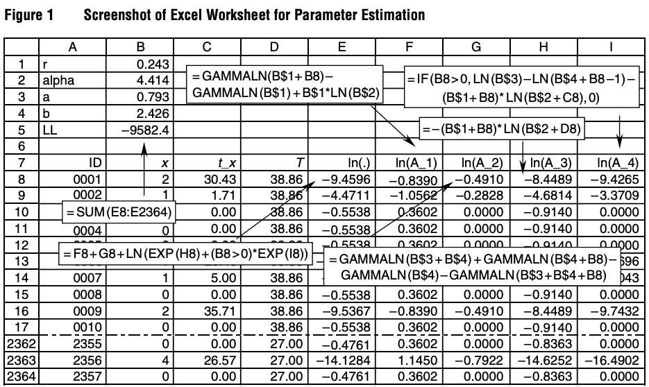This is very easy to code in Excel—see Figure 1 for complete details.
Or not
sklearn
Pause
Immaculate Grid
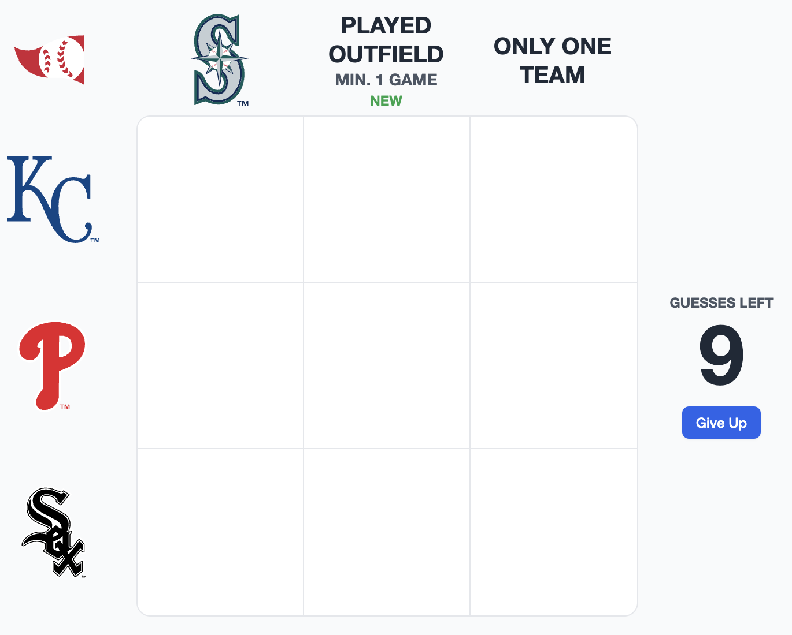Immaculate Grid
Is this an optimization problem?
✅ Objective: Maximize number of boxes filled
✅ Decision variable: Which players go in which boxes
✅ Constraints: Players used once, one player per box, player must satisfy criteria
Jamie Moyer

| PHI | SEA | STL | |
|---|---|---|---|
| HOU | 0 | 0 | 0 |
| COL | 1 | 1 | 1 |
| KC | 0 | 0 | 0 |
Book keeping
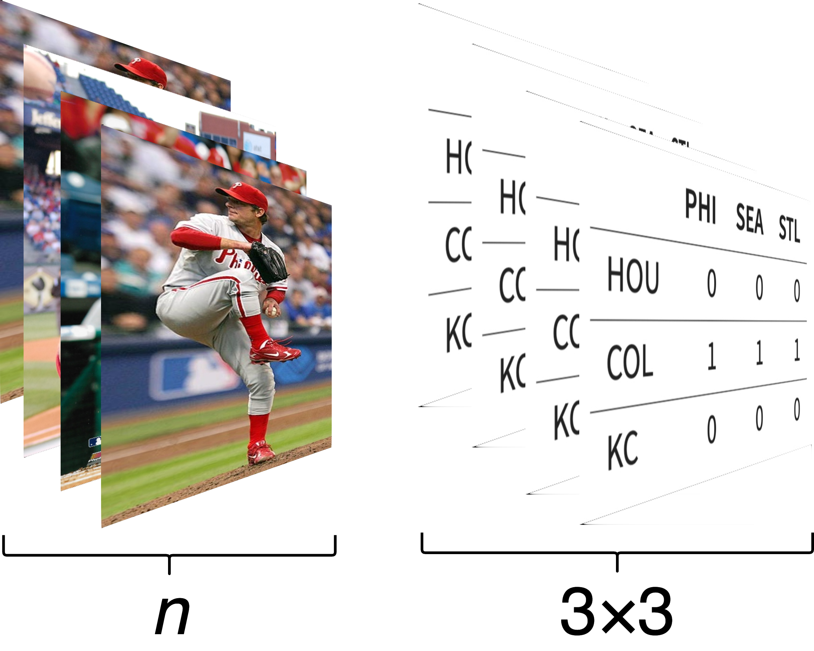Decision variable
Each variable assigns each player n to box i,j \\x\in\{0,1\}^{n,i,j}
Objective function
Maximize the number of boxes assigned to a player \\\underset{x}{\text{argmin}} -\sum_{n=1}^{N}{\sum_{i=1}^{9}{\sum_{j=1}^{9}{x_{n,i,j}}}}
Constraints
Each player assigned to at most one box \sum_{i=1}^{9}{\sum_{j=1}^{9}{x_{n,i,j}}}=1,\ \forall n
Player must satisfy criteria \\x_{n,i,j}\le s_{n,i,j}
Each box assigned at most one player \\\sum_{n=1}^{N}{x_{n,i,j}}\leq 1, \forall i,j
Constraints
Each player assigned to at most one box \sum_{i=1}^{9}{\sum_{j=1}^{9}{x_{n,i,j}}}=1,\ \forall n
Player must satisfy criteria \\x_{n,i,j}\le s_{n,i,j}
Each box assigned at most one player \\\sum_{n=1}^{N}{x_{n,i,j}}\leq 1, \forall i,j
Constraints
Each player assigned to at most one box \sum_{i=1}^{9}{\sum_{j=1}^{9}{x_{n,i,j}}}=1,\ \forall n
Player must satisfy criteria \\x_{n,i,j}\le s_{n,i,j}
Each box assigned at most one player \\\sum_{n=1}^{N}{x_{n,i,j}}\leq 1, \forall i,j
Constraints
Each player assigned to at most one box \sum_{i=1}^{9}{\sum_{j=1}^{9}{x_{n,i,j}}}=1,\ \forall n
Player must satisfy criteria \\x_{n,i,j}\le s_{n,i,j}
Each box assigned at most one player \\\sum_{n=1}^{N}{x_{n,i,j}}\leq 1, \forall i,j
Pause
Cryptograms
Is this an optimization problem?
❓ Objective: The most matches?
✅ Decision variable: The cipher
✅ Constraints: Cipher is 1-1 mapping
Dictionary matches
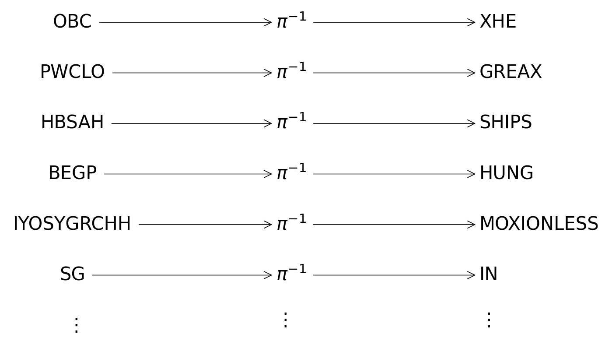Scale
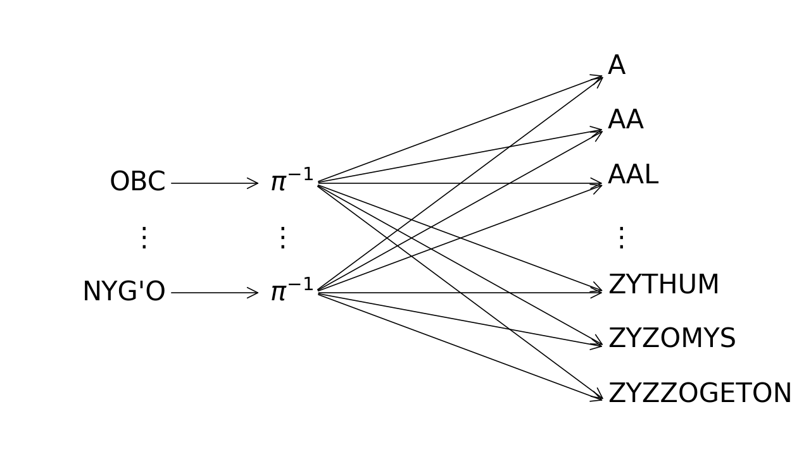A different perspective
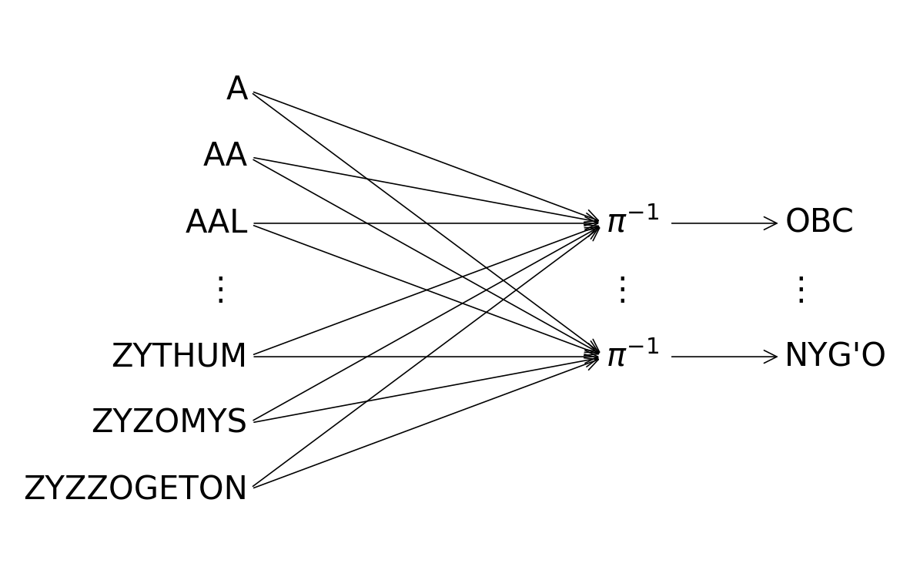Hello, old friend
P(w^{\prime}\vert \pi)=\sum_{w\in W}^{}{P(w^{\prime}\vert \pi, w)P(w)}
Hello, old friend
\begin{align*} P(w^{\prime}\vert \pi)&=\sum_{w\in W}^{}{P(w^{\prime}\vert \pi, w)P(w)}\\ &= \sum_{w\in W}^{}{w^{\prime}\pi^{T}w P(w)} \end{align*}
Permutation matrix
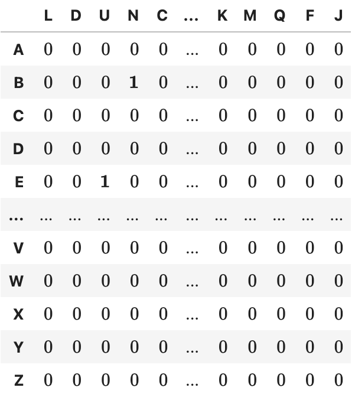
Computation
def negative_log_likelihood(π, X, V, mask):
"""
π: (n, n) permutation matrix
X: (m, L, n) vectorized text
V: (D, L, n) vectorized dictionary
F: (D,) dictionary log frequencies
mask: (m, D) boolean mask indicating which values in dictionary
could not possibly match w'
"""
Xt = X @ π
matches = torch.tensordot(torch.log(X+ϵ), V, dims=[[1, 2], [1, 2]])
return (matches + F[None, :]) * maskP(w^{\prime}\vert \pi) = \sum_{w}^{}{w^{\prime}\pi^{T}w P(w)}
It liiiiiives
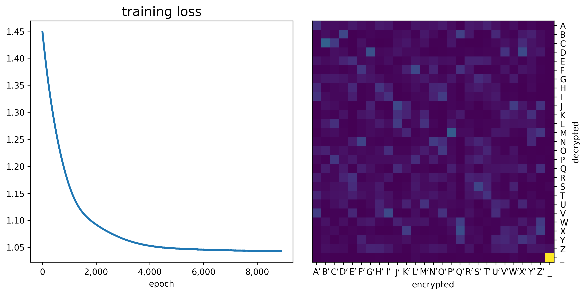Now what?
Does it work?
‘THE GREAT SHILS HUNG POTIONMESS IN THE AIR, OVER EVERY NATION ON EARTH.’
Does it work?
THE GREAT SHIPS HUNG MOTIONLESS IN THE AIR, OVER EVERY NATION ON EARTH. MOTIONLESS THEY HUNG, HUGE, HEAVY, STEADY IN THE SKY, A BLASPHEMY AGAINST NATURE. MANY PEOPLE WENT STRAIGHT INTO SHOCK AS THEIR MINDS TRIED TO ENCOMPASS WHAT THEY WERE LOOKING AT. THE SHIPS HUNG IN THE SKY IN MUCH THE SAME WAY THAT BRICKS DON’T.
Motivating Examples From Industry
Health Care
AdTech
Takeaway
Optimization is like this picture of icicles

“ML Optimization” is like my thumb
Or maybe auto focus
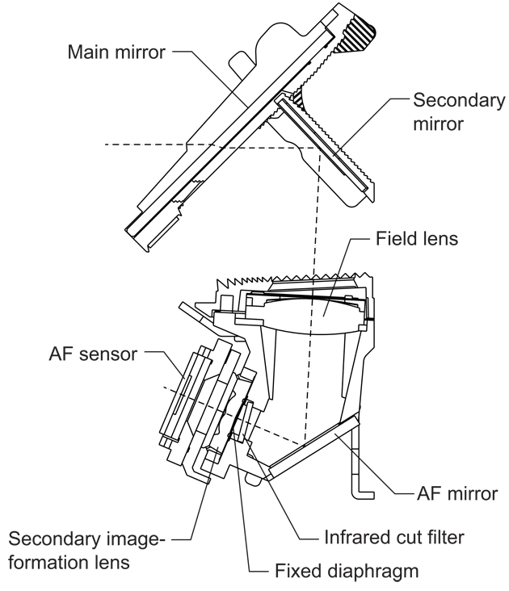
Appendix
- Perpay is hiring
- Link to slides
- Resources
As Seen on Machine Learning
| Constraint | Transformation | ||
| f(\theta)\in [0, 1] | \rightarrow | \frac{1}{1+e^{-x}} | sigmoid |
| f(\theta)\in R^{+} | \rightarrow | ln(1+e^{x}) | softplus |
| f(\theta)\in [0, 1]^{n}, \langle f(\theta),\textbf{1}\rangle=1 | \rightarrow | \frac{e^{x_{i}}}{\sum_{j}^{K}{e^{x_{j}}}} | softmax |
As seen on machine learning transformations
\sigma(x)=\frac{1}{1+e^{-x}}
s\left(\overset{\rightarrow}{z}\right)_{i}=\frac{e^{z_{i}}}{\sum_{j}^{K}{e^{z_{j}}}}
f(x)=\text{ln}(1+e^{x})
f(\theta)=\sum_{k=1}^{\infty}{\beta_{k}\cdot\delta_{\theta_{k}}(\theta)}
\underset{w}{\text{argmin}}\ \mathcal{L}(f(w),y) + \lambda \lVert w\rVert^{2}_{2}
Lifetimes
CLV
Imagine a customer with x transactions during the period (0,T]
- Can we estimate the customer’s future lifetime value?
- How many more transactions will they generate before they churn?
CLV: Beta-Geo Model
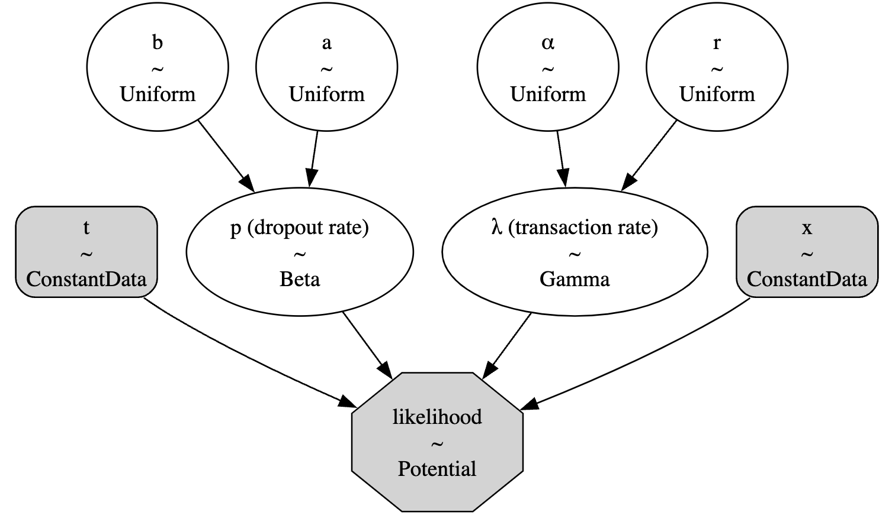Simple Example
\begin{align*} \underset{\theta}{\text{argmin}}&\ f({\theta, X}) &\text{Objective Function}\\ \text{s.t.}& &\text{Subject to}\\ &\ \theta_{i}\in{\mathbb{Z}^{+}} &\text{Assign entire resources}\\ &\ \theta_{i}>0 &\text{Non-negativity}\\ &\ \sum_{i=1}^{n}{\theta_{i}} < B &\text{Budget} \\ \end{align*}
Tips
Absolute Value
Objective function: likelihood
- ~Character frequency~
- ~Word frequency~
- Conditional probability
Model fitting
from tqdm.notebook import tqdm
def doubly_stochastic_constraint(π):
return sum(
(1 - π.sum(axis=axis)).abs().sum()
for axis in [0, 1]
)
last_loss = np.inf
with tqdm(range(10_000)) as pbar:
for _ in pbar:
π = make_π(σ)
loss = (
-score(π, X, V, mask).mean()
+ doubly_stochastic_constraint(π)
)
loss.retain_grad()
# Backpropagation
loss.backward()
optimizer.step()
optimizer.zero_grad()
loss = loss.item()
pbar.set_postfix(loss=f'{loss:>7f}')
if abs(last_loss - loss) < 1e-8:
break
last_loss = loss